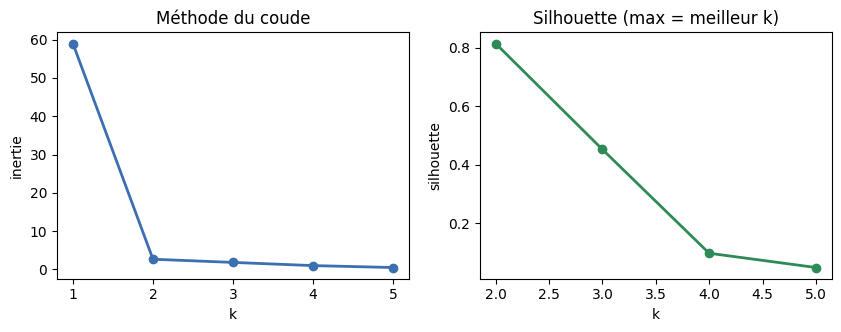
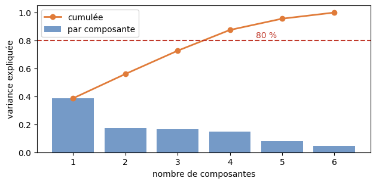
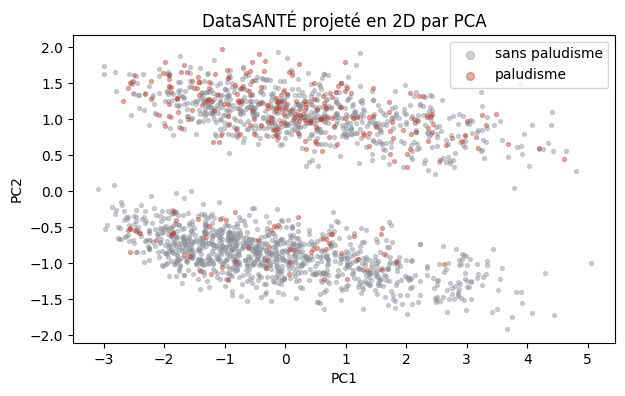
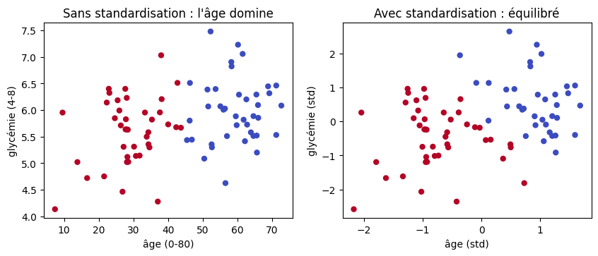
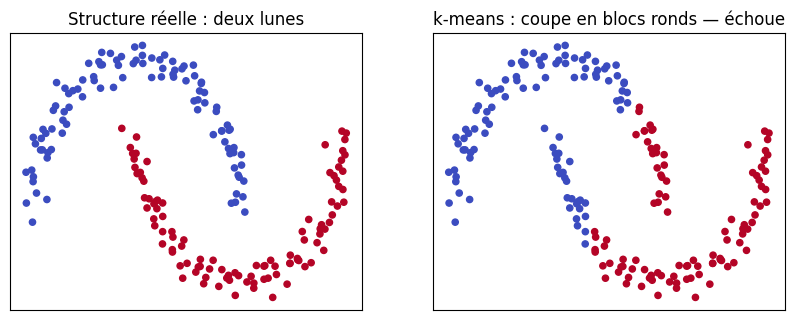
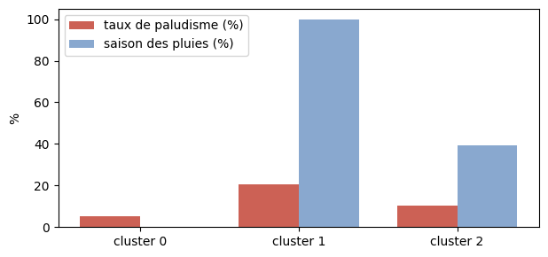

import numpy as np
import pandas as pd
import matplotlib.pyplot as plt
np.set_printoptions(precision=4, suppress=True)
print("Outils prêts.")Outils prêts.Dr. El Hadji Bassirou TOURÉ · DMI · FST · UCAD
Ce TP explore l’apprentissage non-supervisé. On code k-means à la main (NumPy) puis on le confronte à scikit-learn ; on construit l’intuition de l’ACP (PCA) via la variance et les vecteurs propres ; et l’on applique le tout à DataSANTÉ — avec un test révélateur : le clustering, sans voir l’étiquette, retrouve-t-il le paludisme ?
Durée estimée : 1h15. Exécuter les cellules dans l’ordre.
Outils prêts.# Générateur officiel DataSANTÉ-221 (ne pas modifier)
def generate_datasante221(n=10_000, seed=221):
rng = np.random.default_rng(seed)
age = np.clip(rng.gamma(2.5, 14, n), 5, 85).round(0).astype(int)
glycemie = np.clip(rng.normal(5.5 + 0.05*age, 1.8), 3.0, 18.0).round(1)
hemoglobine = np.clip(rng.normal(12.5 - 0.02*age, 1.5), 6.0, 17.0).round(1)
fievre = np.clip(rng.normal(37.5, 0.9, n), 36.0, 41.5).round(1)
saison = rng.choice([0, 1], size=n, p=[0.55, 0.45])
duree = (1.0 + 0.05*age + 0.6*glycemie - 0.3*hemoglobine
+ 1.5*saison + rng.normal(0, 1.8, n)).clip(0.5, 30).round(1)
proba_palu = 1/(1+np.exp(-(-3 + 1.5*saison + 0.8*(fievre>38.5))))
palu = (rng.uniform(0,1,n) < proba_palu).astype(int)
return pd.DataFrame({'age':age,'glycemie':glycemie,'hemoglobine':hemoglobine,
'fievre':fievre,'saison':saison,
'duree_hospit_j':duree,'paludisme':palu})
df = generate_datasante221()
print("dimensions :", df.shape)dimensions : (10000, 7)Tout le non-supervisé repose sur une mesure de proximité : la distance euclidienne (rappel Séance 4).
d(p, q) = sqrt((4-1)² + (6-2)²) = sqrt(9 + 16) = 5.0Lecture. Le triangle 3-4-5 : un déplacement de 3 en horizontal, 4 en vertical, donne une distance de 5. C’est le seul ingrédient géométrique dont k-means a besoin.
On code les deux étapes — affectation, mise à jour — et on déroule l’algorithme sur les 6 points du cours.
# Les 6 points du cours
P = np.array([[1.,1.], [2.,1.], [1.,2.], [5.,6.], [6.,5.], [6.,6.]])
def affecter(P, centres):
# distance de chaque point à chaque centre, puis indice du plus proche
D = np.sqrt(((P[:, None, :] - centres[None, :, :])**2).sum(axis=2))
return D.argmin(axis=1)
def mettre_a_jour(P, labels, k):
# chaque centre = moyenne des points de son cluster
return np.array([P[labels == j].mean(axis=0) for j in range(k)])
def inertie(P, centres, labels):
return sum(np.sum((P[i] - centres[labels[i]])**2) for i in range(len(P)))
print("points et fonctions prêts.")points et fonctions prêts.# Dérouler k-means depuis une initialisation médiocre
centres = np.array([[1., 1.], [2., 1.]]) # deux centres collés en bas
print(f"initialisation : {centres.tolist()}")
for it in range(1, 6):
labels = affecter(P, centres)
I = inertie(P, centres, labels)
print(f"itération {it} : labels = {labels.tolist()}, inertie = {I:.3f}")
nouveaux = mettre_a_jour(P, labels, k=2)
if np.allclose(nouveaux, centres):
print(" -> centres stables : convergence.")
break
centres = nouveaux
print(f"centres finaux : {centres.round(3).tolist()}")initialisation : [[1.0, 1.0], [2.0, 1.0]]
itération 1 : labels = [0, 1, 0, 1, 1, 1], inertie = 108.000
itération 2 : labels = [0, 0, 0, 1, 1, 1], inertie = 9.688
itération 3 : labels = [0, 0, 0, 1, 1, 1], inertie = 2.667
-> centres stables : convergence.
centres finaux : [[1.333, 1.333], [5.667, 5.667]]Lecture. Partant de centres collés, k-means trouve les deux groupes en 3 itérations ; l’inertie chute de 108 à 2,67. C’est la mesure que l’algorithme minimise à chaque étape.
# Confronter notre code à scikit-learn (mêmes centres initiaux)
from sklearn.cluster import KMeans
km = KMeans(n_clusters=2, init=np.array([[1.,1.],[2.,1.]]), n_init=1, random_state=0).fit(P)
print(f"notre inertie : {inertie(P, centres, affecter(P, centres)):.3f}")
print(f"sklearn inertie : {km.inertia_:.3f}")
print(f"centres sklearn : {km.cluster_centers_.round(3).tolist()}")
print("identiques — notre implémentation est correcte.")notre inertie : 2.667
sklearn inertie : 2.667
centres sklearn : [[1.333, 1.333], [5.667, 5.667]]
identiques — notre implémentation est correcte.Exercice. Quatre points en 1D : np.array([[1.],[2.],[8.],[9.]]), avec k=2 et centres initiaux [[1.],[2.]]. Faire UNE affectation et UNE mise à jour avec nos fonctions, et afficher les nouveaux centres.
k-means exige de fixer k. Deux outils aident à le choisir.
from sklearn.metrics import silhouette_score
print(f"{'k':>3} {'inertie':>10} {'silhouette':>12}")
for k in range(1, 6):
kk = KMeans(n_clusters=k, n_init=10, random_state=0).fit(P)
if k >= 2:
sil = silhouette_score(P, kk.labels_)
print(f"{k:>3} {kk.inertia_:>10.3f} {sil:>12.4f}")
else:
print(f"{k:>3} {kk.inertia_:>10.3f} {'(indéfinie)':>12}") k inertie silhouette
1 59.000 (indéfinie)
2 2.667 0.8148
3 1.833 0.4527
4 1.000 0.0976
5 0.500 0.0488# Visualiser coude (inertie) et silhouette
ks = range(1, 6)
inerties = [KMeans(n_clusters=k, n_init=10, random_state=0).fit(P).inertia_ for k in ks]
sils = [silhouette_score(P, KMeans(n_clusters=k, n_init=10, random_state=0).fit(P).labels_)
if k >= 2 else np.nan for k in ks]
fig, axes = plt.subplots(1, 2, figsize=(10, 3.2))
axes[0].plot(list(ks), inerties, "o-", color="#3b6fb0", lw=2)
axes[0].set_xlabel("k"); axes[0].set_ylabel("inertie"); axes[0].set_title("Méthode du coude")
axes[1].plot(list(ks)[1:], sils[1:], "o-", color="#2e8b57", lw=2)
axes[1].set_xlabel("k"); axes[1].set_ylabel("silhouette"); axes[1].set_title("Silhouette (max = meilleur k)")
plt.show()
Lecture. Le coude et le maximum de silhouette désignent tous deux k = 2 : les deux outils convergent vers les deux groupes naturels.
La réduction de dimension repose sur ces trois notions. Calculons-les.
# Variance d'une variable
x = np.array([2., 4., 6., 8.])
print(f"x = {x}, moyenne = {x.mean()}, variance = {x.var():.2f}")
# Covariance entre deux variables (b = 2a : varient parfaitement ensemble)
a = np.array([1., 2., 3., 4.])
b = np.array([2., 4., 6., 8.])
C = np.cov(a, b, bias=True)
print(f"\nmatrice de covariance de (a, b) :\n{C}")
print(f"cov(a, b) = {C[0,1]:.2f} (positive : a et b montent ensemble)")x = [2. 4. 6. 8.], moyenne = 5.0, variance = 5.00
matrice de covariance de (a, b) :
[[1.25 2.5 ]
[2.5 5. ]]
cov(a, b) = 2.50 (positive : a et b montent ensemble)# Vecteurs et valeurs propres d'une matrice de covariance
Cov = np.array([[4., 2.], [2., 4.]])
valeurs, vecteurs = np.linalg.eigh(Cov)
ordre = np.argsort(valeurs)[::-1] # de la plus grande à la plus petite
valeurs, vecteurs = valeurs[ordre], vecteurs[:, ordre]
print(f"valeurs propres : {valeurs}")
print(f"vecteur propre principal : {vecteurs[:,0].round(4)} (~ diagonale)")
print(f"variance portée par PC1 : {valeurs[0]/valeurs.sum():.2%}")
# vérification A v = lambda v
print(f"\nvérif : Cov·v1 = {(Cov @ vecteurs[:,0]).round(4)}")
print(f" lambda1·v1 = {(valeurs[0]*vecteurs[:,0]).round(4)} -> identiques")valeurs propres : [6. 2.]
vecteur propre principal : [0.7071 0.7071] (~ diagonale)
variance portée par PC1 : 75.00%
vérif : Cov·v1 = [4.2426 4.2426]
lambda1·v1 = [4.2426 4.2426] -> identiquesLecture. Les valeurs propres sont 6 et 2 ; le vecteur principal pointe la diagonale (où les deux variables corrélées s’étalent ensemble) et porte 75 % de la variance. C’est exactement ce que la PCA exploite.
On standardise, on applique la PCA, et on choisit le nombre de composantes par la variance expliquée cumulée.
from sklearn.preprocessing import StandardScaler
from sklearn.decomposition import PCA
feats = ['age','glycemie','hemoglobine','fievre','saison','duree_hospit_j']
X = StandardScaler().fit_transform(df[feats]) # standardisation OBLIGATOIRE
pca = PCA().fit(X)
evr = pca.explained_variance_ratio_
cum = np.cumsum(evr)
print("variance par composante :", evr.round(4))
print("variance cumulée :", cum.round(4))
n80 = int(np.argmax(cum >= 0.80) + 1)
print(f"-> {n80} composantes suffisent pour 80 % de variance")variance par composante : [0.3861 0.1739 0.1666 0.1486 0.0809 0.0439]
variance cumulée : [0.3861 0.56 0.7266 0.8752 0.9561 1. ]
-> 4 composantes suffisent pour 80 % de variance# Le scree plot : variance par composante et cumulée
fig, ax = plt.subplots(figsize=(7.2, 3.2))
ax.bar(range(1, len(evr)+1), evr, color="#3b6fb0", alpha=0.7, label="par composante")
ax.plot(range(1, len(cum)+1), cum, "o-", color="#e07b39", lw=2, label="cumulée")
ax.axhline(0.8, color="#c0392b", ls="--"); ax.text(4.5, 0.82, "80 %", color="#c0392b")
ax.set_xlabel("nombre de composantes"); ax.set_ylabel("variance expliquée"); ax.legend()
plt.show()
# Projeter en 2D pour visualiser (couleur = paludisme, NON utilisée pour la PCA)
proj = PCA(n_components=2).fit_transform(X)
print(f"variance conservée par 2 composantes : {PCA(n_components=2).fit(X).explained_variance_ratio_.sum():.2%}")
fig, ax = plt.subplots(figsize=(7, 4))
idx = np.random.default_rng(0).choice(len(proj), 2000, replace=False)
for val, col, lab in [(0, "#8a8f98", "sans paludisme"), (1, "#c0392b", "paludisme")]:
m = (df['paludisme'].values[idx] == val)
ax.scatter(proj[idx][m, 0], proj[idx][m, 1], s=8, c=col, alpha=0.4, label=lab)
ax.set_xlabel("PC1"); ax.set_ylabel("PC2"); ax.legend(markerscale=2)
ax.set_title("DataSANTÉ projeté en 2D par PCA")
plt.show()variance conservée par 2 composantes : 56.00%
Lecture. Deux composantes conservent 56 % de la variance — assez pour une vue d’ensemble. La couleur (paludisme) n’a pas servi à la projection : pourtant un gradient apparaît, signe que la structure non-supervisée recoupe le diagnostic.
Exercice. Refaire une PCA en gardant assez de composantes pour 90 % de variance (PCA(n_components=0.9)), et afficher le nombre de composantes retenues (pca.n_components_).
k-means repose sur la distance ; une variable à grande échelle écrase les autres. Démontrons-le.
# Deux variables d'échelles très différentes : âge (0-80) et glycémie (4-8)
rng = np.random.default_rng(3)
age_d = np.concatenate([rng.normal(30, 8, 40), rng.normal(60, 8, 40)])
gly_d = np.concatenate([rng.normal(5.5, 0.6, 40), rng.normal(6.0, 0.6, 40)])
Xraw = np.column_stack([age_d, gly_d])
# clustering SANS standardisation vs AVEC
lab_raw = KMeans(n_clusters=2, n_init=10, random_state=0).fit_predict(Xraw)
Xstd = StandardScaler().fit_transform(Xraw)
lab_std = KMeans(n_clusters=2, n_init=10, random_state=0).fit_predict(Xstd)
fig, axes = plt.subplots(1, 2, figsize=(10, 3.6))
axes[0].scatter(age_d, gly_d, c=lab_raw, cmap="coolwarm", s=25)
axes[0].set_xlabel("âge (0-80)"); axes[0].set_ylabel("glycémie (4-8)")
axes[0].set_title("Sans standardisation : l'âge domine")
axes[1].scatter(Xstd[:,0], Xstd[:,1], c=lab_std, cmap="coolwarm", s=25)
axes[1].set_xlabel("âge (std)"); axes[1].set_ylabel("glycémie (std)")
axes[1].set_title("Avec standardisation : équilibré")
plt.show()
Lecture. Sans standardisation, k-means sépare presque uniquement selon l’âge (grande échelle) et ignore la glycémie. Après standardisation, les deux variables pèsent également. La standardisation n’est pas optionnelle.
k-means suppose des clusters ronds. Sur une structure non sphérique (deux lunes), il échoue.
from sklearn.datasets import make_moons
Xm, ym = make_moons(n_samples=200, noise=0.06, random_state=0)
lab_m = KMeans(n_clusters=2, n_init=10, random_state=0).fit_predict(Xm)
fig, axes = plt.subplots(1, 2, figsize=(10, 3.6))
axes[0].scatter(Xm[:,0], Xm[:,1], c=ym, cmap="coolwarm", s=20)
axes[0].set_title("Structure réelle : deux lunes")
axes[1].scatter(Xm[:,0], Xm[:,1], c=lab_m, cmap="coolwarm", s=20)
axes[1].set_title("k-means : coupe en blocs ronds — échoue")
for ax in axes: ax.set_xticks([]); ax.set_yticks([])
plt.show()
Lecture. k-means ne trace que des frontières droites entre centres : il découpe les lunes à contresens. Pour des structures complexes, d’autres méthodes existent (DBSCAN, clustering hiérarchique). Connaître cette limite, c’est savoir quand ne pas utiliser k-means.
Test décisif : on lance k-means sans jamais lui montrer l’étiquette, puis on regarde le taux de paludisme par cluster.
# k-means sur 5 variables, sans l'étiquette paludisme
Xs = StandardScaler().fit_transform(df[['age','glycemie','hemoglobine','fievre','saison']])
km3 = KMeans(n_clusters=3, n_init=10, random_state=0).fit(Xs)
df['cluster'] = km3.labels_
print(f"taux de paludisme global : {df['paludisme'].mean()*100:.1f}%\n")
print(f"{'cluster':>8} {'n':>7} {'palu %':>8} {'pluies %':>10}")
for cl in sorted(df['cluster'].unique()):
s = df[df['cluster'] == cl]
print(f"{cl:>8} {len(s):>7} {s['paludisme'].mean()*100:>8.1f} {s['saison'].mean()*100:>10.0f}")taux de paludisme global : 11.8%
cluster n palu % pluies %
0 3998 5.2 0
1 3446 20.5 100
2 2556 10.4 39# Visualiser le taux de paludisme par cluster
taux = [df[df['cluster']==c]['paludisme'].mean()*100 for c in range(3)]
pluies = [df[df['cluster']==c]['saison'].mean()*100 for c in range(3)]
fig, ax = plt.subplots(figsize=(7, 3.2))
xp = np.arange(3); w = 0.38
ax.bar(xp - w/2, taux, w, color="#c0392b", alpha=0.8, label="taux de paludisme (%)")
ax.bar(xp + w/2, pluies, w, color="#3b6fb0", alpha=0.6, label="saison des pluies (%)")
ax.set_xticks(xp); ax.set_xticklabels([f"cluster {c}" for c in range(3)])
ax.set_ylabel("%"); ax.legend()
plt.show()
Lecture — la leçon de la séance. Sans avoir vu l’étiquette, k-means a formé des groupes aux taux de paludisme très différents : le cluster « saison des pluies » (100 % de pluies) atteint 20,5 % de paludisme, contre 5,2 % pour le cluster « saison sèche » — pour un taux global de 11,8 %. Le clustering a retrouvé, seul, un facteur de risque majeur.
C’est toute la valeur du non-supervisé : faire émerger des structures réelles avant toute annotation. Souvent la première étape d’un projet — comprendre la structure — avant de passer, si besoin, au supervisé. La Séance 10 y revient justement, avec les réseaux de neurones.